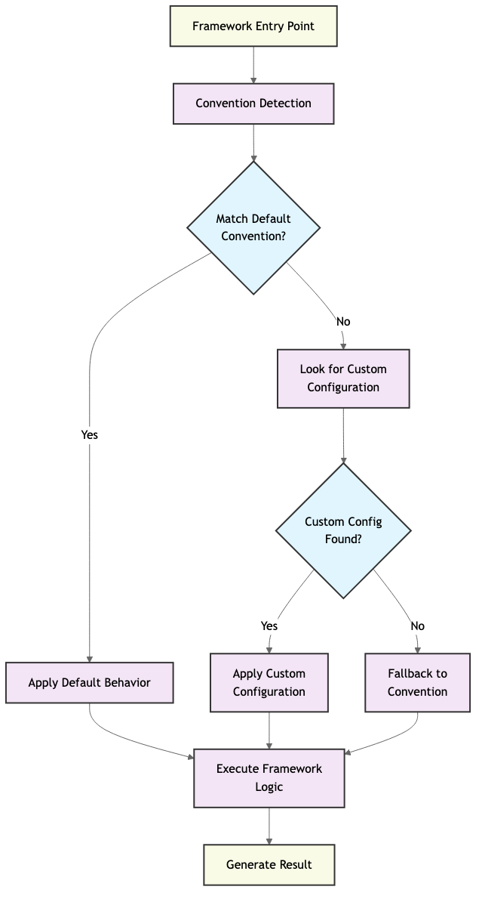

Convention over Configuration: A Senior Architect’s Perspective on Modern Software Design
· 476 words · 3 minutes reading time
Convention over Configuration: A Senior Architect’s Perspective on Modern Software Design🔗

1. Why We Need CoC: The Pain of Early Configuration-Driven Systems🔗
In the early Java EE days, enterprise developers spent countless hours writing XML just to describe what the application should already know...
- Over-declaration: every bean, service, and controller had to be manually wired.
- Separation of concerns gone wrong: configuration scattered outside implementation.
- Cognitive overhead: understanding the system meant parsing endless files.
If 90% of projects follow a similar structure, why not standardize it?
This is the exact problem CoC solves.
2. What Is Convention over Configuration?🔗
“Don’t write configuration for things the framework can figure out.” — DHH, creator of Ruby on Rails
The idea is simple:
- Prefer sensible defaults over explicit setup.
- Encourage implicit structure through file naming and organization.
- Let developers focus on what’s different, not on repeating boilerplate.
3. CoC Across Languages and Frameworks🔗
| Framework | CoC in Action | Tooling |
|---|---|---|
| Rails | Folder-based MVC, no route config | rails generate scaffold |
| Spring Boot | Autowiring, annotations over XML | @ComponentScan etc. |
| Django | App naming, admin auto discovery | startapp, urls.py |
| Laravel | Controller + Resource Route bindings | artisan make:controller |
| NestJS | Module structure + Decorator syntax | @Controller, @Module() |
These frameworks adopt the same mental model — directory structure, naming rules, default lifecycles.
4. CoC as an Engineering Doctrine🔗
CoC is not just a DX (Developer Experience) trick — it’s an engineering design strategy.
Good architecture is invisible.
It guides teams without needing to be constantly enforced. CoC helps in:
- Code consistency across teams
- Reduced onboarding time
- Minimized error surface
- Automated tooling compatibility
5. Architecture Visualization🔗
This diagram illustrates how modern frameworks integrate:
- Scaffolding
- Default behaviors
- Naming conventions
- Directory layout
...into a unified, opinionated software system.
6. CoC in DevOps and Microservices🔗
Convention-driven tools like:
- Terraform: Directory layout & variable naming
- Kubernetes YAML: Label selectors, config maps
- CI/CD:
.github/workflows/,Jenkinsfile, etc.
All rely on shared conventions. As environments scale, conventions become guardrails.
7. Code Portability Enabled by CoC🔗
Once you understand Rails, you’ll pick up Laravel or NestJS quickly — because CoC abstracts language differences.
// NestJS
@Controller('posts')
export class PostController {
@Get(':id')
async show(@Param('id') id: string) {
return this.postService.findOne(id);
}
}
// Laravel
public function show($id) {
$post = Post::find($id);
return view('posts.show', compact('post'));
}
# Rails
def show
@post = Post.find(params[:id])
end
8. AI, Automation & Future of CoC🔗
Even modern AI workflows adopt CoC:
data/,model/,train.py,inference.py— this is a de facto convention- MLflow and Kubeflow pipelines follow predictable directory and module conventions
- Prompt-based coding (Copilot / GPT) relies heavily on knowing the structure
This shows CoC is not obsolete — it is evolving.
9. Final Thoughts🔗
CoC is not a limitation — it’s a productivity enabler.
- It minimizes choices that don’t matter.
- It promotes clarity, collaboration, and growth.
- It enables rapid transfer of skills across ecosystems.
"Conventions are a gift to your future team."
Written by a Senior Software Architect & Platform Engineer